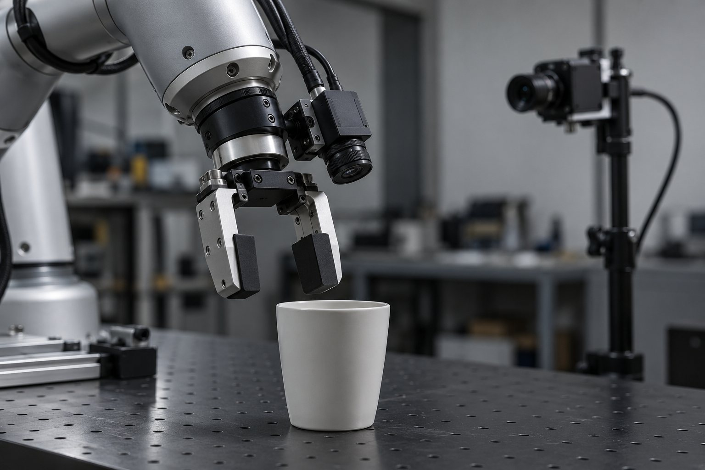
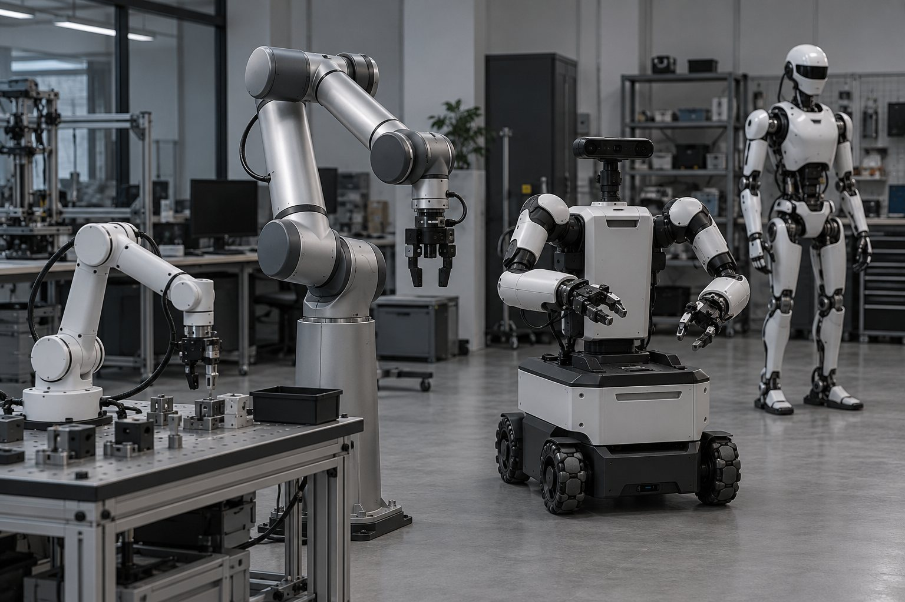

Course · 8 lessons · robotics with AI
VLA: robots that see, understand, and act
How a model looks at a camera, reads a sentence, and returns arm movements. In eight lessons you learn the architecture, pick a model by its license, open real robot data, train and evaluate a policy with LeRobot, and build the checklist to take it into the real world. You don't need a robot.

- 8lessons
- 130minutes of lessons
- 23exercises with "done when"
- 0.6.1LeRobot version tested (10/19/2026)
The lessons
From concept to workbench: what a VLA is, how it works inside, which models exist in Oct/2026, data, training, simulation, the research frontier, and the path to the real world.
 Lesson 1 · 14 minFrom LLM to a robot that actsA chatbot returns text. A robot has to return motion, dozens of times per second, while looking at a camera. This lesson separates the four model families you'll hear about in the course and shows what changed between 2023 and October 2026.
Lesson 1 · 14 minFrom LLM to a robot that actsA chatbot returns text. A robot has to return motion, dozens of times per second, while looking at a camera. This lesson separates the four model families you'll hear about in the course and shows what changed between 2023 and October 2026.
Lesson 2 · 16 minEye, brain, and hand: inside a VLAEvery VLA has three parts: one that sees, one that understands, and one that turns the decision into movement. The movement part is where models differ the most, and where the clock gets tight: the arm waits for a command every few milliseconds.
Lesson 3 · 16 minThe model map in 2026There are dozens of VLAs, and the best one on the chart may be the one you can't use. Before size and benchmark scores, three questions decide: are the weights downloadable, does the license allow your use case, and is access free, paid, or partners only. Lesson 4 · 16 minData: the missing fuelText for training an LLM is everywhere on the internet. Robot data isn't: someone has to move the arm, record the camera, and label the task. In 2026 the answer became video of people working, filmed in first person. In this lesson you open a real robot dataset.
Lesson 4 · 16 minData: the missing fuelText for training an LLM is everywhere on the internet. Robot data isn't: someone has to move the arm, record the camera, and label the task. In 2026 the answer became video of people working, filmed in first person. In this lesson you open a real robot dataset. Lesson 5 · 18 minHands-on with LeRobot 0.6LeRobot, from Hugging Face, puts data, policies, and commands for recording, training, and running in one place. In this lesson you train a real ACT policy for a few steps and end up with a checkpoint on disk. No robot and no account needed.
Lesson 5 · 18 minHands-on with LeRobot 0.6LeRobot, from Hugging Face, puts data, policies, and commands for recording, training, and running in one place. In this lesson you train a real ACT policy for a few steps and end up with a checkpoint on disk. No robot and no account needed. Lesson 6 · 16 minSimulate before you break things: sim, evaluation, and sim-to-realTesting on the real robot costs time, parts, and patience. The simulator lets you fail a thousand times for free and gives you one number: the success rate. But the number only counts if the test is hard enough and if the simulated world looks like the real one.
Lesson 6 · 16 minSimulate before you break things: sim, evaluation, and sim-to-realTesting on the real robot costs time, parts, and patience. The simulator lets you fail a thousand times for free and gives you one number: the success rate. But the number only counts if the test is hard enough and if the simulated world looks like the real one. Lesson 7 · 16 minBeyond imitation: RL, world models, and memoryImitation has a ceiling: the policy only learns what the person showed it, and it doesn't know how to recover from a mistake it has never seen. In 2026 three ideas push that ceiling: learning from its own experience (RL), predicting the future in video (World Action Models), and remembering what it has already done (memory).
Lesson 7 · 16 minBeyond imitation: RL, world models, and memoryImitation has a ceiling: the policy only learns what the person showed it, and it doesn't know how to recover from a mistake it has never seen. In 2026 three ideas push that ceiling: learning from its own experience (RL), predicting the future in video (World Action Models), and remembering what it has already done (memory). Lesson 8 · 18 minFrom the lab to the real worldA policy that succeeds in the simulator is still far from a production line. In between are ROS 2, which connects the model to the motors, the safety layers, which no VLA can do without, and the real state of the market, which is less ready than the headlines make it look.
Lesson 8 · 18 minFrom the lab to the real worldA policy that succeeds in the simulator is still far from a production line. In between are ROS 2, which connects the model to the motors, the safety layers, which no VLA can do without, and the real state of the market, which is less ready than the headlines make it look.
Who it's for
- 1People who code a little in Python and want to understand robotics with AI without memorizing acronyms.
- 2People without a robot: the exercises run on data from the Hugging Face Hub and in simulation. The SO-101 arm is optional.
- 3People who need to decide whether a model fits a real use case and want to check license, access, and safety first.
What you'll be able to do
- 1Say whether a system is an LLM, VLM, VLA, or World Action Model, and why.
- 2Pick a model by license, size, and type of access.
- 3Open a robot dataset, train a short policy, and measure its success rate in simulation.
- 4Build the safety checklist and your study plan with dates.